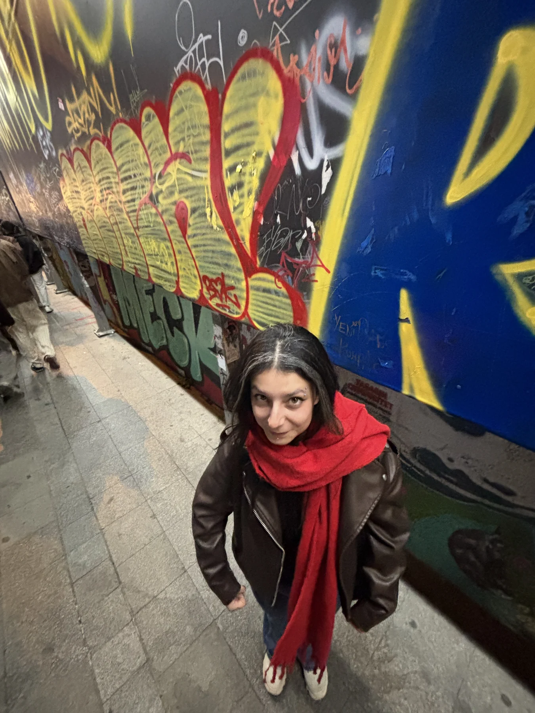

HUNTER LICENSE№ 0825
LİSANS SAHİBİ
KIVILCIM
Hunter sınıfı: SPECIALIST
Görev bölgesi: DÜNYANIN HER YERİ

KİMLİK NOKV-0825-1039
NEN YETENEĞİMIRMIR KÖPÜĞÜ
YETKİ SEVİYESİ★★★★★
DURUM● AKTİF
ISSUED 25·08·2026AUTH // YUSUFACCESS ∞
ハンター × ハンター · SINIRSIZ GEÇERLİLİK · KOPYALANAMAZ